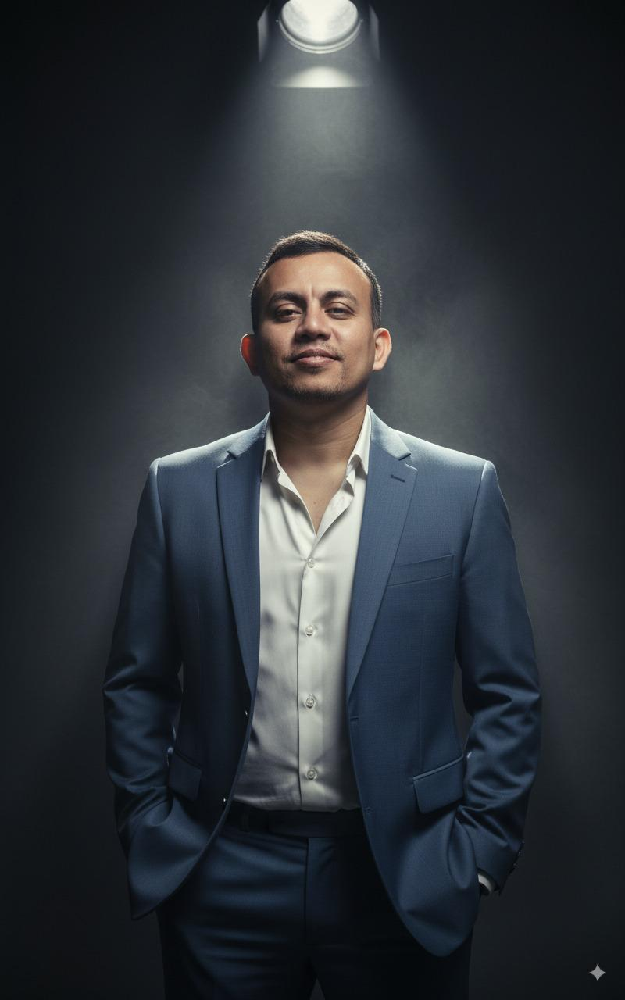

Meta única do dia
Ao entrar, o aluno vê exatamente a tarefa de hoje — nada mais. Pendências de dias anteriores aparecem como alerta, nunca escondidas.
Um método, um mentor, um único painel: metas diárias, edital verticalizado por banca e o seu caderno de erros trabalhando por você — dia após dia, até o dia da prova.

Servidor público, dedicado a bancas de concursos policiais. Produz o próprio material, elabora as próprias questões e constrói, para cada mentorado, um plano de estudo verticalizado — não um curso genérico revendido.
Ao entrar, o aluno vê exatamente a tarefa de hoje — nada mais. Pendências de dias anteriores aparecem como alerta, nunca escondidas.
Cada erro vira anotação, organizada por disciplina e conteúdo. O sistema agenda a revisão sozinho — em 10, 15 dias, no seu ritmo.
O mentor converte qualquer edital em syllabus verticalizado, cruza com o que você já estudou e prioriza por recorrência histórica da banca.
Guilherme acompanha o progresso de cada mentorado em uma central única — sem depender de planilhas ou grupos soltos.
Cada mentorado envia dúvidas por tópico. O mentor responde de dentro do próprio painel — sem se perder em zap.
Tudo o que é estruturado na plataforma pode virar relatório — para o aluno acompanhar sua própria evolução.
Português, Direito Penal, Direitos Humanos, Raciocínio Lógico, Legislação Especial — cada disciplina no seu lugar, cada revisão no seu dia certo.